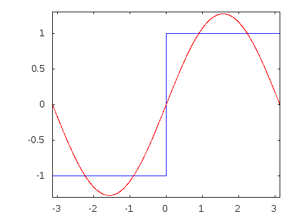

The Genius of Joseph Fourier: From Heat Waves to Visualizing the Albanian Eagle with Epicycles
Joseph Fourier is arguably the most important guy you've never heard of (unless you're a mathematician, of course).
If you're reading this on a screen, listening to music on Spotify, or looking at a JPEG, you're relying on math he developed in the early 1800s. In 1822, Fourier proved something fundamental: any periodic function can be decomposed into a sum of sines and cosines. This idea, which he developed to solve heat flow problems, turned out to be one of the most important discoveries in mathematics.
I've wanted to build a visualization of this since watching Grant Sanderson's Fourier series video years ago. Never had the time, but finally did it over Christmas.
Here's what I built: 300 rotating arrows, each spinning at a constant rate, conspiring to draw the Albanian eagle.
Try the slider. With 10 circles, you get a rough outline. With 150+, it's nearly perfect. Each arrow does the simplest possible thing (rotation) yet their sum produces something intricate.
The Albanian Eagle
I chose the Albanian eagle for a reason beyond national pride. The double-headed eagle from Albania's flag is a closed curve with sharp corners, smooth arcs, and fine details. Everything that makes Fourier decomposition interesting. The big, slow circles give you the overall wingspan and body. Medium circles add the curve of the feathers and the shape of the heads. The tiny, frantic circles fill in the sharpest points: the talons, the beak tips, the crown. It's a good test case. If the math can handle this, it can handle anything.
Where This Comes From
Fourier wasn't thinking about drawing pictures when he developed this. He was trying to solve a problem that had stumped mathematicians for decades: predicting how heat flows through objects.
Here's the setup. You have a metal rod. You know the temperature at every point along it right now. The heat equation is supposed to tell you what happens next, how that temperature pattern evolves over time. But solving it directly for any arbitrary starting temperature? Not so easy.
Then Fourier noticed something. If your initial temperature distribution happens to look like a cosine wave (smooth, periodic, flat at the endpoints), the math becomes trivial. The wave just decays exponentially as time passes. Higher frequency waves decay faster, lower frequency waves stick around longer.
But that's not the clever part. The heat equation is linear, meaning if you have two solutions, their sum is also a solution. So if you could somehow express your messy, arbitrary temperature distribution as a sum of these nice cosine waves, you could solve for each wave independently and just add up the results.
The natural objection: real temperature distributions don't look like sums of waves. Fourier asked anyway: what if any distribution, no matter how un-wavy, can be broken down this way?
Let's consider a step function, the most un-wavy thing imaginable. Two metal rods at different temperatures brought into contact. The left half sits at -1°, the right half at 1°. Flat, discontinuous, the opposite of a smooth wave.

Fourier claimed you could write this as:
And it works. Add the first few terms, you get a rough approximation. Keep adding more, the approximation gets better. In the limit, with infinitely many terms, it's exact.
This is where things get interesting. Fourier was working with real-valued functions (temperatures along a rod, which are just numbers). But the same idea extends to functions that output complex numbers, which you can think of as points wandering around the 2D plane.
Instead of decomposing into sine and cosine waves, we decompose into rotating vectors in the complex plane. Each vector spins at some integer frequency. Add them tip-to-tail, and the final tip traces out your shape. A drawing is just a function from time to points in 2D space, and Fourier's insight says any such drawing can be built from rotating circles.
The Math
Let γ : [0,1] → ℝ² be our closed curve (the eagle's outline). We want to express this as a sum of circular orbits:
where γ₋ₙ, …, γₙ are circular orbits. Negative subscripts rotate clockwise, positive ones counterclockwise. You need both to reconstruct the shape.
Each orbit rotates at some integer frequency k, with a certain radius rₖ and starting angle θₖ:
Instead of tracking x and y coordinates separately, we can use complex numbers. Think of z(t) = x(t) + iy(t) as a point in the 2D plane. With Euler's formula, our rotating vectors become exponentials:
where cₖ = rₖ exp(iθₖ) encodes both the radius and starting angle.
Finding the Coefficients
Here's the key question: given a shape, how do we find these coefficients?
To isolate coefficient cₖ, we multiply our function by exp(-2πikt) and integrate from 0 to 1. Here's why this works:
Why? Because when you integrate exp(2πi(j-k)t) from 0 to 1, you get zero for all j ≠ k. The rotating vectors all average out to zero except the one you're solving for, which stays still after the multiplication.
This is the fundamental formula:
In practice, I computed this numerically. I sampled 1000 evenly-spaced points around the eagle's outline, and for each frequency k, I calculated the integral as a sum. That gave me the radius and starting angle for each rotating arrow.
This process is called the Discrete Fourier Transform, one of the most important algorithms in computing.
Building It
I used Python and OpenCV to extract the eagle's outline from an image of the Albanian flag through edge detection. The animation itself is vanilla JavaScript with HTML5 Canvas. For each frame, I compute where each arrow should be, add them tip-to-tail, and draw the result.
Why This Matters
Fourier analysis has an incredible array of applications.
Audio – MP3 compression decomposes sound into frequencies and discards the ones you can't hear
Images – JPEGs use a 2D version (Discrete Cosine Transform) to shrink file sizes
Signal processing – WiFi, radio, phone calls all rely on breaking signals into frequencies
Medicine – MRI and CT scans reconstruct images from frequency data
The idea shows up everywhere because it's genuinely fundamental; complicated patterns can be understood as sums of simple, periodic pieces.
Credits: I wrote this article because Grant Sanderson's explanation of Fourier Series was so elegant it made me want to build it myself.